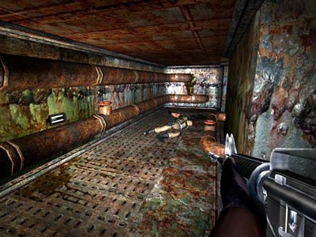
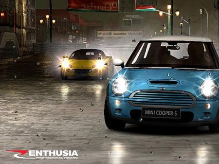
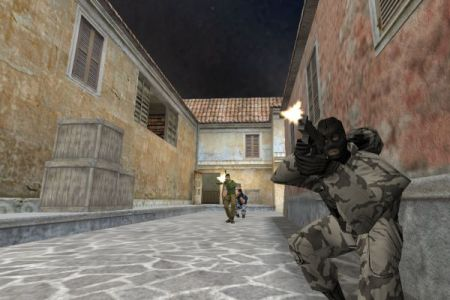

Vilain Game Designer ! Pas de biscuit pour toi ! VI
L'article original est écrit par Ernest Adams publié par Gamasutra (juin 2005).
L'auteur original n'est en aucun cas reponsable de la précision de cette traduction.

Et c’est reparti ! Les messages sont arrivés, les gens ont parlé et j’ai maintenant une demi-douzaine d’autres erreurs de game design à vous présenter, pour que les évitiez. Je suis toujours très intéressé par le sujet, donc si vous pensez à certaines, prenez soin de m’envoyer un message à notwinkie@designersnotebook.com (NDT : en anglais).
Comme toujours, une mise en garde : même les bons jeux peuvent contenir de mauvais choix de game design. Ce n’est pas parce qu’un jeu est cité ici qu’il est mauvais. Parfois, c’est juste un bon jeu avec une erreur à un moment.
Et passons maintenant aux TDC.
Le Mode Facile est suppose être Facile, bordel !
Dans l’un de mes précédents articles sur les erreurs de game design, je m’étais plaint des jeux qui n’offrent pas plusieurs modes de difficulté. Maintenant, je réalise que cela n’est pas approprié pour tous les genres de jeux ; mais c’est habituellement possible pour les jeux d’action ou de stratégie. Offrir plusieurs niveaux de difficulté, disais-je, élargit le marché et rend votre jeu accessible à des gens qui n’y auraient pas joué sinon.
Ce TDC en est un corollaire, envoyé par Christopher Kempke. Il écrit :
« J’ai remarqué que dans beaucoup de jeux récents (et dans presque tous les shooters), il semble y avoir une volonté profonde de vous empêcher de finir le jeu. Vous pouvez arriver jusqu’à la dernière pièce, le dernier niveau, le dernier boss, mais cette pièce, ce niveau, ce boss doivent représenter « un challenge ». »
« J’ai tendance à jouer aux jeux dans le mode de difficulté le plus bas, parce que je ne peux pas passer ma vie sur un jeu. Mais je voudrais le terminer et j’ai choisi le Mode Facile pour une certaine raison. Si je suis capable de finir les quinze premiers niveaux avec une demi-douzaine de morts, il semble raisonnable que je puisse finir le dernier niveau en 2 ou 3, ou au pire 5 ou 6 tentatives. Mais non ! Généralement, la dernière pièce, le dernier niveau ou le dernier boss sont grosso modo vingt fois plus forts que tout ce à quoi vous avez pu être confrontés jusqu’à présent, nécessitent des techniques de combat complètement différentes ou se situent tout simplement hors de portée de mes capacités. »
« Far Cry est le pire exemple que j’ai vu récemment : on vous donne un plein stock d’armes et de boucliers, une porte se ferme derrière vous et vous êtes maintenant face à une douzaine des ennemis les plus puissants du jeu. A aucun moment du jeu auparavant on ne fait face à plus de trois ennemis à la fois (en mourant presque à l’occasion). Et là, il y en a huit, sans compter les trois ou quatre ennemis supplémentaires qui vous tirent dessus dans l’ombre. Les tuer tous (probablement au prix de toutes vos munitions) ne fait qu’ouvrir une nouvelle porte qui en relâche encore plus. Et bien sûr, il s’agit d’un gantlet (NDT : un mot tiré du français "gantelet " qui désigne une forme de châtiment au cours duquel une personne est force de courir entre deux rangées d’hommes se faisant face et armés de bâtons ou de fouets pour frapper la victime. Décidément, certains mots sont charmants :3) ; vous ne pouvez rien faire d’autre qu’ouvrir les portes une par une, en sachant que chacune cache une armée que vous n’avez plus les moyens de combattre.
« Je crois que je fais en moyenne deux jeux par an où je peux faire 99% du jeu sans aide, mais où j’ai besoin d’un code pour la toute dernière partie. Ça me rend dingue, et ce n’est pas amusant. Si je voulais subir une telle expérience, j’aurais sélectionné un mode de difficulté plus élevé. »

En fait, je n’ai pas de problème avec le fait de devoir utiliser des techniques différentes contre les boss – c’est une convention du jeu vidéo qui est vieille d’au moins 25 ans et elle ajoute du challenge et de l’intérêt au gameplay. Mais je pense que Christopher a tout à fait raison en ce qui concerne le problème de la difficulté. Ce TDC est un bon exemple d’une erreur classique de design : ne pas réussir à donner au joueur ce qu’il veut réellement. Si le joueur choisit le Mode Facile, c’est qu’il veut un jeu qui soit facile, à jouer et à terminer.
« Mais », entend-on s’écrier une armée de game designers à l’ancienne, « ça veut dire qu’il va finir le jeu trop vite ! ». Ah oui ? Trop vite par rapport à quoi ? Vous voulez dire trop vite pour votre ego, parce que vous travaillez encore avec cette notion dépassée selon laquelle le joueur est votre adversaire. Il ne l’est pas. Il est votre public, la personne que vous essayer de distraire et à qui vous essayer de procurer du plaisir. Et si cela veut dire que cela doit lui prendre deux heures de terminer le jeu, soit ; c’était son choix. Il peut toujours revenir en arrière et rejouer dans un mode de difficulté plus élevé.
Vibrations ou retour de force mal implémentés
Celle-ci m’a été envoyée par Adam Doyle :
« Je déteste quand la manette vibre à la moindre action. Est-ce qu’une vibration à chaque pas est nécessaire ? C’est tout particulièrement un problème dans les jeux de combat et les FPS, où chaque impact ou tir fait vibrer la manette. Quand c’est bien fait, ça peut contribuer à une meilleure immersion, mais si les vibrations sont trop fréquentes, elles perdent de leur impact parce que les joueurs s’y habituent. Un bon exemple serait le nouveau Serious Sam sur console ; mais beaucoup de jeux de tir ou de combat (comme Tekken 4) utilisent beaucoup trop la vibration. »
« Il y a aussi le problème d’une mauvaise gestion de la force de la vibration. Une petite vitre se brise et le contrôle vous saute des mains ? Ou un entrepôt explose avec votre personnage à l’intérieur et tout ce que vous sentez, c’est un léger mouvement ? Une fois de plus, ceci brise la connexion entre le joueur et le jeu. Avec des volants utilisant le retour de force, la roue peut vibrer si violemment qu’elle force le joueur à la lâcher et à attendre que ce soit fini pour reprendre le jeu. Un exemple en est la nouvelle simulation Enthusia Racer. Le volant vous saute littéralement des mains. »

« Non seulement une mauvaise utilisation de la vibration fait sortir le joueur du jeu, mais cela peut aussi leur faire perdre le contrôle en lui faisant rater les boutons ou les actions, ou faire glisser ses doigts sur le stick analogique dans le feu de l’action. Il y a aussi des problèmes de santé dans les cas extrêmes : de longues périodes de forte vibration provoquent un engourdissement des doigts et des mains. Les développeurs doivent savoir que ce n’est pas parce que la manette peut vibrer qu’il est nécessaire d’implémenter une fonction vibration. Selon moi, il est préférable de pas implémenter la vibration ou le retour de force que de mal les implémenter. »
En fait, on peut généraliser cette dernière phrase à à peu près tout dans les jeux : une mauvaise fonctionnalité, c’est pire que pas de fonctionnalité du tout. Comme je l’ai déjà dit à de nombreuses reprises, si vous ne pouvez pas le faire bien, ne le faîtes pas.
Bien vu, Adam. La vibration n’est pas juste un gadget que vous mettez dans le jeu juste parce que vous le pouvez. Ce devrait être une rétroaction intelligente pour le joueur, qui fait partir de l’interface utilisateur et qui est donc de votre de ressort en tant que game designer. Prenez le temps d’y penser soigneusement et de le faire bien.
Les angles de caméra qui rendent le jeu impossible
Adam m’a aussi proposé une seconde TDC, les angles de caméra qui rendent le jeu injouable – généralement dans l’espoir de produire une « expérience cinématique ». Il écrit :
« Le problème avec beaucoup de survival horrors (et d’autres genres aussi) est que les développeurs, à la recherche de cette « expérience cinématique » choisissent de placer la caméra de façon à bien cadrer la scène, mais en rendant le jeu complètement injouable. Si votre personnage combat des tonnes et des tonnes d’ennemis, pourquoi donc placer la caméra au ras du sol avec un angle dynamique ? Effectivement, ça peut être joli, mais les joueurs se moquent complètement de savoir si c’est joli s’ils n’arrivent même pas à jouer. »
En fait, j’aime beaucoup les angles de camera inhabituels et tout ce qui crée un intérêt visuel et brise la monotonie de la vue à la troisième personne. Mais Adam a raison : le jeu doit rester jouable ! Des angles de caméra recherchés sont intéressants pour des genres de jeux plus lents, comme les jeux d’aventure ou d’action-aventure s’ils ne sont pas trop difficiles, comme ICO. Mais si vous vous battez pour survivre, il est nécessaire de voir clairement ce qui passe.
Mauvais manuels et mauvais tutoriels
T.C. Fox a écrit pour dire :
« Je suis l’un de ces joueurs qui lit toujours le manuel et qui aime les tutoriels complets et informatifs avant de se lancer dans le jeu. J’ai beaucoup apprécié les tutoriels dans Gran Turismo 4. Néanmoins, après une longue absence du monde du golf, j’ai décidé de tester Tiger Woods 2004 et j’ai été consterné par le manque d’information au sujet des points plus avancés du jeu (que ce soit le jeu de golf ou le jeu vidéo lui-même). Le tutoriel auquel on vous fait jouer avant toute chose est hâtif et superficiel. Le manuel est épouvantablement fin. Ceci a constitué une première expérience de jeu incroyablement frustrante, qui m’a presque poussé à ramener le jeu au magasin. »
Les manuels semblent un peu dépassés aujourd’hui, dans la mesure où ils ont été pour la plupart remplacés par des niveaux tutoriels. Même si c’est le cas, le manuel offre une fonctionnalité que le tutoriel ne peut pas proposer : vous pouvez le consulter lorsque le jeu est en pause. Ceci est aussi valable pour un joueur qui aime savoir ce à quoi il doit s’attendre avant de se plonger dans le jeu, plutôt que de passer par la case essaye-échoue-recommence. Cette phase est caractéristique d’un certain type de gameplay hardcore (« tire et vois ce qui se passe ») avec lequel beaucoup de casual gamers ne se sentent pas à l’aise et, plus important, pour lequel ils n’ont pas le temps.
Tiger Woods est un jeu qu’un casual gamer ou même un non-joueur pourrait essayer. Quelqu’un pourrait l’offrir comme cadeau d’anniversaire à un aficionado du golf qui n’aurait jamais touché à un jeu vidéo. Ce genre de joueur a besoin – et attend – une introduction décente à cette expérience. Si vous le frustrez à ce niveau, vous mettez en l’air votre chance de lui vendre l’édition de l’année prochaine.
Je sais que les manuels coûtent de l’argent et prennent de la place dans la boîte ; c’est pourquoi nous les avons réduits à presque rien, si ce n’est une double page, de nos jours. Mais si vous voulez atteindre un marché autre que celui des traditionnels hardcore gamers, qui ont tout le temps et toute la patience du monde, vous lui devez un manuel et des tutoriaux décents.
Mauvaise conception de l’écran splitté
C’est un problème majeur dans les jeux de course console, où l’écran doit être divisé entre les joueurs. Mat Lamarche écrit :
« En mode Un Joueur, les écrans sont grands et beaux, vous avez une vue immense sur la piste et tout ce qu’il y a sur la route… Mais j’attends de voir un jeu qui gère correctement la division de l’écran en mode Multijoueur. Ces stupides indicateurs de temps (de combien vous gagnez ou perdez) apparaissent soudain au milieu de l’écran et vous ne pouvez quasiment plus rien voir sur la route ! »
Il s’agit juste d’un cas particulier d’un problème plus general : le design d’interface avec un écran splitté est difficile. Et c’est sur le point de devenir plus difficile, à mesure que nous passons à une génération de télévisions HD. Avec une plus grande résolution, on pourrait s’attendre à ce que cela soit plus facile, mais hélas, pour les cinq prochaines années ou quelque chose comme ça, il y aura des millions de joueurs qui n’auront pas de télévision HD. Vous devrez concevoir des jeux qui soient aussi jouables sur leurs télévisions, ou perdre ce marché.
Tant que vous y êtes, gardez les pop-ups hors de la route ! Mettez sur le côté ou quelque chose dans ce goût-là.
Des caisses sans palettes et sans chariots élévateurs (des objets dans des endroits incongrus)
Les caisses constituent déjà une blague récurrente dans le monde des jeux vidéo, parce que nous en voyons tout le temps. Le site Old Man Murray comporte un passage en revue hilarant d’un certain nombre de jeux , basé sur le temps que vous devez passer sur le jeu avant de voir une caisse – à ce moment précis, déclare l’auteur, c’est que le game designer n’avait plus d’idées. Plus vous pouvez jouer longtemps sans voir une caisse ou un tonneau, meilleur est le jeu (NDT : assez incroyablement, le temps caractéristique avant d’apercevoir une caisse est, dans les jeux PC, de l’ordre de la seconde !).

Le même article pointe du doigt le fait qu’il n’est pas possible de déplacer des caisses sans chariots élévateurs et sans palettes pour poser les caisses dessus. S’il y a des caisses dans un endroit, il vaudrait mieux qu’il y ait des palettes en dessous et au moins un chariot élévateur aussi. En fait, quelqu’un m’a écrit (malheureusement, j’ai perdu son nom dans un crash de ma boîte e-mail) et m’a fait remarquer que les caisses en bois sont de toute façon complètement dépassées de nos jours. Le transport par bateaux se fait actuellement avec des piles de cartons maintenus ensemble par un film plastique industriel très résistant. Le bois est lourd et cher, alors que le carton est léger, économique et recyclable. Pourtant, nos FPS nous montrent encore cette technologie vieille de 40 ans, mais dans des jeux de science-fiction futuristes.
Je ne peux pas prétendre que des caisses sans palettes constituent une TDC, parce que les types de Old Man Murray y ont pensé en premier, mais je peux généraliser ce cas particulier au problème d’objets se trouvant dans des endroits incongrus, un sujet dont plusieurs personnes se sont plaintes à moi. Maintenant, bien évidemment, ceci ne s’applique pas à des jeux de plates-formes pour lesquels il est courant de voir des caisses (parmi beaucoup d’autres objets) flotter au milieu du vide. Les caisses en lévitation font partie des conventions du jeu de plate-forme ; je comprends ceci et voilà peut-être pourquoi ils n’ont pas besoin de palettes ou de chariots élévateurs. Mais si votre jeu veut parler du monde réel, si vous voulez recevoir des tonnes de retours sur ô combien excitant et crédible est votre scénario, alors essayer de ne pas créer de pièces sans porte, pleines de caisses qui apparemment sont arrivées par un conduit d’aération. Essayez de ne pas mettre de barils dans un système d’égout où tous les passages sont plus petits que les barils. Essayez de ne pas mettre une caisse contenant une demi-tonne d’armes et d’armures dans une petite grotte nichée dans le flanc d’une falaise de 150 mètres de haut. Et essayez de penser à quelque chose de plus intéressant que des caisses ou des barils pour servir de containers pour les kits de soin et les munitions.
Conclusion
C’est tout pour cette année : six choses stupides de plus à ne pas faire dans votre jeu. Certaines d’entre elles, comme les mauvais angles de caméra, tuent la jouabilité. D’autres, comme une vibration mal réglée, vont juste irriter le joueur sans raison. Dans tous les cas, prenez garde à ces avertissements de peur d’être, vous aussi, privés de biscuit. Merci à toutes les personnes qui ont contribué à cet article et encore une fois, continuez d’en envoyer !
Ajouter un commentaire
Commentaires

"un ami m’a fait remarquer que les caisses en bois sont de toute façon complètement dépassées de nos jours"
pour l’anecdote, ce type de conteneur est encore largement utilisé dans l'industrie pour les gros volumes ou composants massifs (j'ai encore croisé la semaine dernière une caisse en bois de 2x2x3m à la centrale : le game designer ne devait plus avoir d'idée XD)

Le niveau de difficulté :
Aah ! ça c'est un sujet de débat qui retombe souvent et que j'adore :) Tout dépend des développeurs et à quel public le jeu s'adresse. Les extrêmes à éviter sont : Un jeu très dur pour les enfants, un jeu trop facile pour les plus grands. L'idéal est de décrire brièvement à quel genre de jeu le joueur a affaire en décrivant les éventuelles difficultés qu'il peut rencontrer en choisissant son mode favori. Par exemple : "Vous n'avez jamais joué à ce genre de jeu ? Choisissez le mode 'facile' !", "Vous connaissez ce genre de jeu mais vous ne maîtrisez pas encore très bien toutes les fonctionnalités ? Choisissez le mode 'normal' ! Vous êtes un as de ce genre de jeu ? Alors nous vous conseillons de choisir le mode 'difficile' !". Et encore, il existe des jeux où on ne peut plus changer la difficulté une fois le mode campagne lancé. Dès que le joueur se rend compte que la difficulté ne lui convient pas, le joueur va être découragé de devoir recommencer du début.
La vibration :
Je me souviens, quand j'ai joué à 'Zelda : Ocarina of time' avec le 'vibrator', c'était vraiment pas mal. Mais le problème est qu'on s'y habitue assez vite et finalement ça perd de son intérêt.
La caméra :
C'est surtout dans les jeux en 3D que la caméra est mal programmé ou qui est programmé à mal.
Voici un exemple de caméra particulier : LBA2. Dans ce jeu, la caméra reste toujours fixe où que l'on soit. Il y a deux mode de caméra : la vue extérieure et la vue intérieur.
Extérieur : Quand le héros sort d'un bâtiment, la position de la caméra a été prédéfinie de façon à ce qu'elle soit centré sur lui tout en prenant soin de bien montrer les alentours. Lorsqu'il s'approche de la falaise, la caméra change de point de vue pour voir une corniche. Mais à tout moment, il suffit de cliquer sur une touche pour que la caméra se retrouve derrière notre héros, même si la caméra doit montrer des choses que le joueur est censé voir.
Intérieur : Là par contre, l'angle de la caméra est fixe et nous voyons notre héros se déplacer d'un point de vue isométrique. C'est pas très pratique pour sauter au-dessus d'un trou, mais là il s'agirait plus d'un problème de gameplay.
Un autre jeu, les chevaliers de Baphomet 3 : Les actions sont plus simplifiés, du coup, les développeurs ont jugé bon de pouvoir mettre la caméra dans un angle adéquat, mais parfois dans des endroits où on ne s'y attend pas. Ce qui fait que quand vous devez courir pour éviter un éboulement, la caméra change d'angle et avant que je ne m'en rende compte, je courais bêtement dans un mur tandis qu'une stalactite me tombait dessus.
Manuel et Tutoriel :
Dans tous les jeux, même simpliste, c'est indispensable ! Ce n'est pas seulement un guide d'installation et de "Comment jouer ?", c'est aussi une façon de présenter le genre de jeu que vous avez créé (et en profiter pour le séduire d'aller jusqu'au bout). Un manuel de quelques pages qui présente les bases suffit largement. Même dans StraCraft II, qui est connu pour être assez technique possède dans son manuel : la configuration d'installation, un résumé de ce qui s'est passé dans le premier opus, le contrat de licence et… c'est tout ! Tout ce qui est technique, vous l'apprenez sur le tas en jouant à une campagne progressive. En fait, toute la campagne représenterait un tutoriel, car à chaque début de mission, un nouvel élément vient s'ajouter à votre arsenal.
Mais j'aurais tendance à dire : n'en faites pas trop. Si dans les tous premiers jeux c'était : "Vous y voilà, débrouillez-vous sans nous !", aujourd'hui ce serait : "Vous avez fini le didacticiel, nous allons continuer à vous guider !". Je pense un peu à 'Zelda : Twilight princess' où on vous dit : "Il faut aller à tel endroit, derrière ce rocher il y a un passage secret qu'on ne peut ouvrir avec la clef de mon collègue qui se trouve dans la maison d'à côté". Le côté exploration et découverte, ça vous dit quelque chose ? Moi en tout cas, je n'ai pas ressenti cela contrairement aux autres opus.
Et c'est encore pire dans World of Warcraft (j'ai arrêté pour ça d'ailleurs), sauf que ce sont les joueurs expérimentés qui vous guident. Vous découvrez un donjon pour la première fois et vous voulez l'explorer dans les moindres recoins : Impossible ! Si vous vous éloignez du groupe ou que vous vous y aventurez seul, vous mourrez ! J'ai bien demandé aux autres si on pouvait jeter un coup d'œil à tel endroit, même pour une quête, la réponse est toujours : "Non, on trace direct jusqu'au boss pour que JE puisse avoir de meilleurs armes et armures, sinon va te faire voir !" Vraiment sympa… Un denier point sur les boss où la meilleur stratégie pour les battre est : "Faire comme les autres !" No comment.
Bref, on est trop guidé ! J'explore un lieu sauvage et reculé de tous, je ne visite pas un musée ! (Et je tiens à préciser que malgré les défauts cités dans les deux jeux ci-dessus, le reste est génial !)
Les écrans splitté :
Dans The Settlers II, en mode multijoueur à un contre un, l'écran était splitté en deux. Bonjour les stratégies discrètes ^^
Le truc des caisses :
Tiens, j'avais jamais fait gaffe. On peut dire que les caisses en bois sont l'archétype typique des conteneurs dans tous les jeux vidéos. Une mauvaise habitude ?
Je ne suis pas d'accord avec le premier — ça vous plaît, à vous, un jeu fini en 8 heures sans mal ? Où est la satisfaction ? Si c'est pour être pris par la main du début à la fin, type "bon, j'ai fini le didactitiel, maintenant je vais jouer sérieusement… Ah ? Le jeu est déjà fini ?", autant ne pas acheter le jeu. Quand au coup des multiples niveaux de difficulté, c'est une astuce artificielle pour faire monter la durée de vie au prix d'une forte impression de déjà-vu. Le vrai problème ici est plutôt la hausse abrupte et imprévue de la difficulté. Et FarCry est un jeu notoirement déséquilibré, ça c'est vrai :p